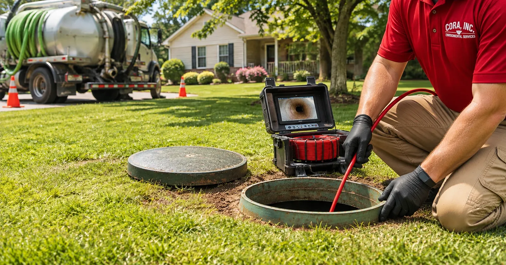

Your drains keep backing up. The tank was pumped last year. Someone suggests tearing up the yard to find the problem. Before anyone picks up a shovel, there is a faster and far less destructive way to get an answer: send a camera down the line and look.
A septic and sewer camera inspection shows exactly what is happening inside the pipes between your house, your septic tank, and your drain field — roots, cracks, sags, blockages, and all. At Cora Environmental, we use camera inspections across Huntsville, Madison County, and North Alabama to diagnose problems precisely, so the repair is targeted instead of exploratory.

What Is a Septic or Sewer Camera Inspection?
A camera inspection uses a waterproof, high-resolution camera mounted on the end of a flexible push cable. The technician feeds the camera into the line through an existing access point — a cleanout, the septic tank opening, or occasionally a removed toilet — and watches a live video feed on a monitor above ground.
As the camera travels, a counter on the cable reel records how far it has gone. When the camera reaches a root mass, a crack, or a sag in the pipe, the technician knows the exact distance from the access point. Many camera heads also carry a small locating transmitter, so the crew can follow the signal from the surface and mark the spot — and its depth — on the ground.
The result is a recorded, documented view of the pipe’s condition that you can see for yourself, instead of a best guess.
What a Camera Inspection Finds
Buried lines fail in a handful of predictable ways, and almost all of them are easy to spot on camera:
- Root intrusion: tree and shrub roots work into pipe joints looking for water, then grow into dense mats that catch solids and block flow. This is one of the most common problems we find on wooded North Alabama lots.
- Cracked or broken pipe: age, ground movement, and heavy loads overhead can crack older clay, cast iron, and thin-wall plastic lines.
- Bellies (sags): a section of pipe that has settled lower than the rest holds standing water and waste, which slows drainage and builds up clogs over time. Shifting clay soil makes this a regular finding around Huntsville.
- Offset or separated joints: pipe sections that have pulled apart or shifted out of line create a lip that snags paper and solids.
- Grease, scale, and buildup: fats, oils, and mineral deposits narrow the inside of the pipe until it can no longer carry full flow.
- Collapsed pipe: a fully crushed or caved-in section stops flow completely and has to be replaced.
- Foreign objects: wipes, toys, and other items that should never have been flushed.
The camera also shows where the line runs and how it connects to the tank — including inlet and outlet baffle condition — which helps pinpoint whether a backup starts in the house plumbing, the line to the tank, or the line out to the drain field.
When You Should Schedule a Camera Inspection
A camera inspection is worth it any time the cause of a problem isn’t obvious, or when you need to know a line’s condition before making a decision. Common reasons include:
- Recurring backups or slow drains. If the tank has been pumped and drains are still slow, the problem is often in the line itself.
- Buying or selling a home. A standard home inspection usually doesn’t look inside buried sewer pipe. A camera inspection can reveal roots or a broken line before closing, when it’s still easy to negotiate a repair. Pair it with a septic system inspection for the full picture.
- Older homes and mature trees. Homes with original clay or cast iron lines, or with large trees near the sewer path, are prime candidates for root intrusion and cracking.
- Before and after hydro jetting. A camera shows what needs to be cleared and confirms the line is actually clean afterward.
- Before a remodel, addition, or new hardscape. Knowing where lines run — and whether they’re sound — prevents building a patio or driveway over a pipe that will need work soon.
- Sewage odors or soggy spots in the yard. A break in the line can leak wastewater into the soil well before it causes a backup inside.
What to Expect During the Inspection
Every property is a little different, but a typical camera inspection follows the same basic steps:
- Find an access point. We locate a cleanout or open the septic tank access. If the tank lid is buried, it may need to be uncovered first.
- Clear the line if needed. If the pipe is full of water or completely blocked, the camera can’t see much. Sometimes the tank needs pumping or the line needs to be opened up before the inspection can proceed.
- Run the camera. The technician feeds the camera through the line while watching the live monitor and noting distance at each problem area.
- Locate and mark. Where problems show up, the crew can trace the camera head from above ground and mark the location and approximate depth.
- Review the footage with you. We walk you through what the camera found and explain your options, from cleaning to spot repair to replacement.
Safety note
Never open or lean into a septic tank to look inside yourself. Septic tanks hold gases that can cause unconsciousness quickly, and a tank opening is a serious fall hazard. Leave access and inspection work to a licensed, equipped crew.
After the Camera: Turning Footage Into a Fix
The point of a camera inspection is to make the next step precise. Depending on what the footage shows, that usually looks like one of these:
- Clean the line. Roots, grease, and scale can often be cleared with hydro jetting, sometimes during the same visit. A follow-up camera pass confirms the pipe is open.
- Spot repair. A single cracked section, offset joint, or short belly can usually be repaired by digging only at the location the camera marked. Hydro excavation can expose the pipe with less disruption to the yard.
- Replace the line. When the camera shows widespread damage, collapse, or repeated root intrusion along the full run, replacing the line is often the more cost-effective long-term fix.
- Look further down the system. If the lines are clear but problems continue, attention shifts to the tank and the drain field.
Because the camera tells you exactly where and what the problem is, you approve a repair based on evidence — and avoid paying to dig up the wrong part of the yard.
Camera Inspections for Commercial Properties
Restaurants, offices, apartment complexes, and other commercial properties rely on larger lines that carry far more volume. Our televised video inspection (TVI) rig handles commercial sewer lines up to 8 inches, which few crews in the Huntsville area can match. Property managers and contractors get documented footage they can share, and because we also run jetting, many blockages can be cleared in the same trip.
Camera Inspection FAQs
1. What does a sewer camera inspection show?
A camera inspection shows the inside of the pipe in real time: root intrusion, cracks, broken or offset joints, sagging sections (bellies) that hold water, grease and scale buildup, collapsed pipe, and foreign objects. It also shows how far each problem is from the access point, so a repair can be targeted.
2. Does a camera inspection require digging up my yard?
No. The camera goes in through an existing access point such as a cleanout, the septic tank opening, or a removed toilet. Digging only happens if the camera finds a problem that has to be repaired, and then it is limited to the spot the camera located.
3. Should I get a sewer camera inspection before buying a home in Huntsville?
It is a good idea, especially for older homes or properties with large trees near the sewer line. A standard home inspection usually does not look inside buried pipes, and a camera inspection can reveal root intrusion, cracked pipe, or a failing line before you close.
4. Can a camera inspection find my septic tank or drain lines?
Many inspection cameras carry a locating transmitter in the camera head. A technician can follow that signal from above ground to mark where the line runs and how deep it is, which helps find a buried tank, cleanout, or problem spot without guesswork.
5. Is a camera inspection the same as a septic inspection?
Not exactly. A septic inspection evaluates the tank, its baffles and levels, and the condition of the drain field. A camera inspection looks inside the pipes. The two are often done together, because a full picture of the system includes both the tank and the lines that feed and leave it.
6. What happens if the camera finds a blockage?
It depends on the cause. Grease, scale, and roots can often be cleared with hydro jetting, sometimes during the same visit. Cracked, collapsed, or badly sagging pipe usually needs a section repaired or replaced. The footage lets you see the problem and the recommended fix before any work is approved.
Get Answers Before You Dig
A camera inspection turns a frustrating, recurring drain problem into a clear diagnosis:
- See it first. Know exactly what’s wrong inside the line before approving any repair.
- Dig less. Locate the problem to a specific spot instead of trenching the whole yard.
- Buy with confidence. Check buried lines before closing on a home.
- Fix it in one trip. Pair the camera with jetting to clear many blockages the same day.
If you’re dealing with slow drains, repeat backups, or a home purchase anywhere in Huntsville, Madison County, or North Alabama, call Cora Environmental at (256) 202-5130 or contact our team online to schedule a camera inspection.